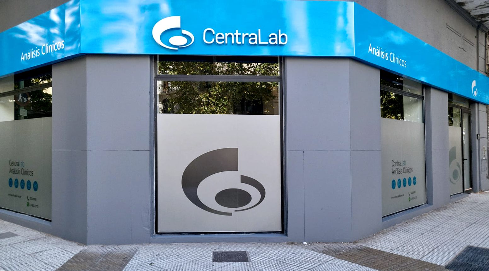
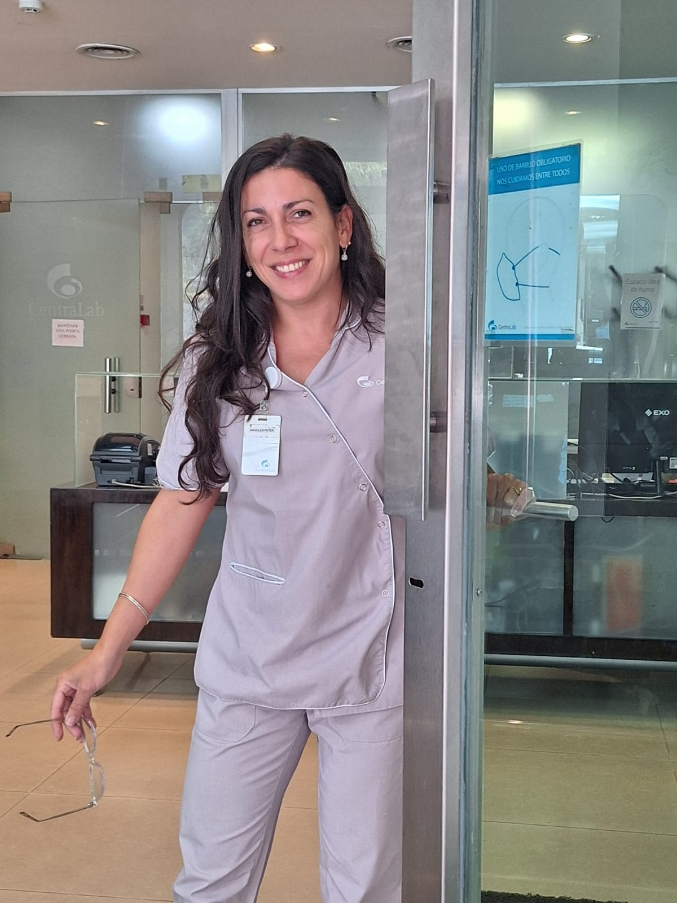
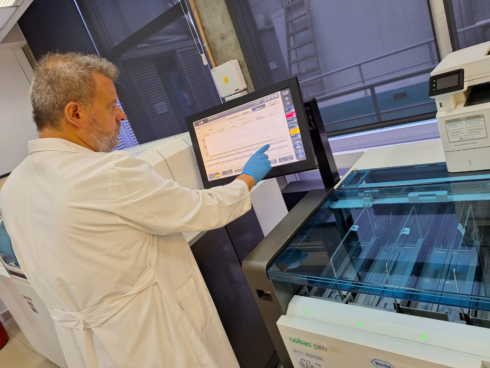
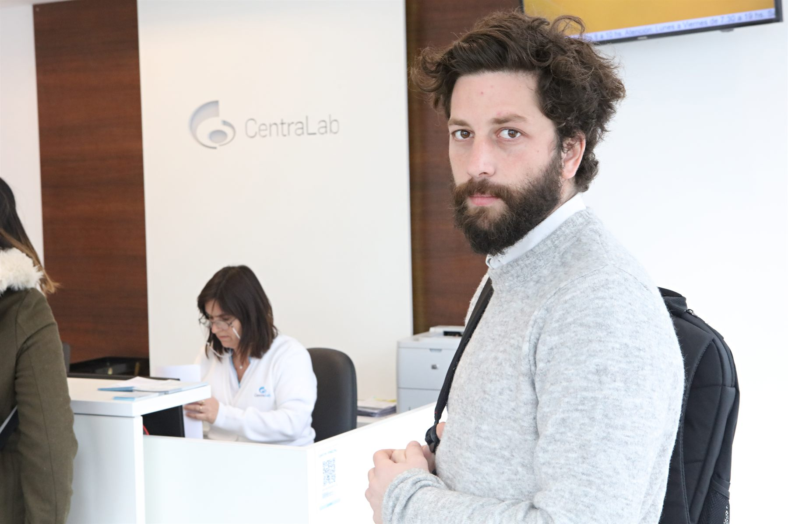

Plan de crecimiento 2026

Una nueva forma de trabajar juntos + una idea grande para todo el año.
Hoy ejecutamos campañas y contenidos con buen resultado. Somos ese socio estratégico que mira el mercado por ustedes, propone antes de que lo pidan y empuja el negocio hacia adelante.
Esta propuesta eleva lo que hacemos. Movemos la conversación de “qué publicamos este mes” a “cómo hacemos crecer a CentraLab este año”.

No esperar el pedido. Llevar ideas, oportunidades y lecturas de mercado a la mesa de forma proactiva.
Menos acciones aisladas que se olvidan; más una narrativa y un banco de contenido que se construyen en el año.
Reuniones que no hablan solo de posteos, sino de servicios, mercados, paciente y competencia.
Uno cambia cómo trabajamos juntos. El otro propone una gran idea creativa para el año. El primero crea el músculo; el segundo, el relato. Juntos transforman la cuenta.
Seis iniciativas que convierten a Popcorn en un socio estratégico: innovación trimestral, inteligencia de mercado, un estudio de contenido, marca empleadora y una mesa de negocio.
Un territorio que ningún laboratorio argentino ocupa: “Siempre cerca de lo que más importa”, con un sello narrativo que enciende contenido todo el año.
Importante: el Movimiento B no necesita cerrarse ya. Lo pensamos como un plan anual para empezar a producir de septiembre en adelante, con el tiempo necesario para cerrar bien el concepto. Sin presión, con criterio.
Cada iniciativa responde a una idea simple: que CentraLab sienta que hay alguien pensando su negocio todo el tiempo, no solo produciendo piezas. Las desarrollamos una por una en las próximas páginas.
3 ideas nuevas por trimestre para hacer crecer el negocio. Se implementen o no, demuestran pensamiento constante.
Informe trimestral de qué hace la competencia en pauta, contenido, SEO, IA y redes. El mercado, mirado por ustedes.
Jornadas de producción que generan un banco de contenido para todo el trimestre. Mucho más que “grabar un video”.
Capacitación a C-Levels en LinkedIn y marca personal, sin costo. La cultura de CentraLab, por fin contada.
Una reunión trimestral distinta a la operativa: negocio, servicios, mercado e innovación. No posteos.
Actualización de la identidad visual de la cartelería a una estética más moderna y alineada a la marca.
Nos comprometemos a presentar 3 ideas nuevas por trimestre para hacer crecer el negocio de CentraLab. Se implementen o no, el objetivo es que CentraLab perciba que siempre estamos pensando nuevas oportunidades para la marca.
Cada idea llega documentada: qué problema resuelve, qué valor genera, cómo se implementa y cómo se mide. CentraLab decide; nosotros garantizamos que el flujo de ideas no se apague nunca.
Un informe trimestral que resume qué está haciendo la competencia —Rossi, Diagnóstico Maipú y otros— para detectar movimientos, anticipar tendencias y traer oportunidades a la mesa antes de que se vuelvan urgencias.
Qué campañas y mensajes están pauteando, y dónde.
Temas, formatos y frecuencia que están trabajando.
Cómo se posicionan en las búsquedas que importan.
Qué historias audiovisuales están contando.
Qué usos de inteligencia artificial están explorando.
Si y cómo están ocupando el terreno de audiencias jóvenes.
Su comunicación institucional, B2B y de marca empleadora.
Cómo trabajan la relación directa con su base.

No es solo un cambio de nombre: es un cambio de valor percibido. Cada jornada deja de ser “grabar un video” para convertirse en una sesión que genera un banco de contenido para todo el trimestre.
Fotografías, videos, reels y behind the scenes con calidad de marca.
Entrevistas y testimonios con médicos, bioquímicos y pacientes.
El detrás de escena del laboratorio: tecnología, control y calidad.
Material suficiente para alimentar todos los canales sin urgencias ni picos.
CentraLab tiene un equipo muy sólido y una cultura que casi no comunica. Y merece una mesa donde se hable de crecimiento, no solo de calendario. Dos iniciativas que elevan la relación.
Ofrecemos, sin costo, una capacitación para C-Levels sobre el uso estratégico de LinkedIn y la importancia de construir marca personal e institucional.
Una reunión trimestral distinta al seguimiento operativo. Dejamos de hablar de posteos y campañas para enfocarnos en el negocio.
Ambas comparten un propósito: que Popcorn sea percibido como un socio que piensa el negocio de CentraLab, no como un proveedor de piezas.
Aprovechamos este plan para incluir una actualización de la identidad visual de la cartelería digital de las sedes, llevándola a una estética más moderna y alineada con la evolución de la marca.

Evoluciona el histórico “Tu laboratorio siempre cerca” hacia un territorio humano y abierto. Porque “lo que más importa” cambia según cada persona — y eso le da a CentraLab un universo de historias para contar todo el año.
La salud de su hijo.
La tranquilidad de sus controles.
El bienestar de su equipo.
Su rendimiento.
Un resultado confiable.
La prevención.
Un análisis nunca es un fin: es el comienzo de algo. Un embarazo, un tratamiento, volver a entrenar, quedarse tranquilo, cuidar a un hijo, acompañar a un padre.
El concepto se baja a momentos de vida. Cada etapa es una historia, un público y una campaña posible. Por eso es tan potente para contenido: no se agota, porque la vida no se detiene.
El primer análisis, el pediatra, la contención. Cuidar desde el principio.
El acompañamiento mes a mes. Uno de los momentos más sensibles y memorables.
El chequeo que se posterga, la prevención que se vuelve hábito.
Los controles, la autonomía, el cuidado sin traslados.
El eje transversal: la salud que se cuida antes de que aparezca el síntoma.
El concepto se traduce en un calendario editorial: cada mes tiene una excusa real para hablar de salud. Esto justifica contenido permanente, no campañas aisladas. Un mapa que se planifica con tiempo y se produce con el Content Studio.
La salud sucede todos los días. CentraLab también. El calendario convierte la marca en una presencia constante, no en una serie de apariciones sueltas.
La idea se explica con un video base —el manifiesto de marca— del que se derivan múltiples piezas cortas para cada momento de vida, canal y campaña. Una producción, un año de contenido. Acá se conecta con el Content Studio.
“Las historias empiezan mucho antes del resultado.” El relato institucional que define el territorio y da el tono a todo lo demás.
Todo nace de una misma idea madre: máxima coherencia estética y de mensaje, con el costo de producción optimizado. El sistema crece sin empezar de cero cada vez.
Antes de elegir, exploramos. Estos son los conceptos que pusimos sobre la mesa para encontrar el rumbo. Algunos refuerzan el concepto elegido; otros pueden ser campañas puntuales dentro del año. La materia prima está.
Este es exactamente el espíritu del Laboratorio de Innovación: traer siempre más ideas de las que se necesitan, para que CentraLab elija desde la abundancia, no desde la urgencia.
El Movimiento A puede arrancar ya. El Movimiento B lo pensamos con tiempo para cerrar bien el concepto y empezar a producir de septiembre en adelante. Un plan anual, no una corrida.
Activamos el Movimiento A (Comité, Benchmark, primeras ideas). En paralelo, cerramos el concepto y escribimos el guion del video base. Sin apuro.
Primera jornada de Content Studio y producción del video base. Arranca la maquinaria del concepto anual.
Reducciones por momento de vida, calendario editorial en marcha, primer Benchmark entregado y primer Comité de Crecimiento.
3 ideas por trimestre, Benchmark trimestral, 6 jornadas de Content Studio al año y la marca presente los 365 días.
Una nueva forma de trabajar que se anticipa, y una idea grande que ningún laboratorio argentino está ocupando. El terreno está libre. Movamos el avispero.